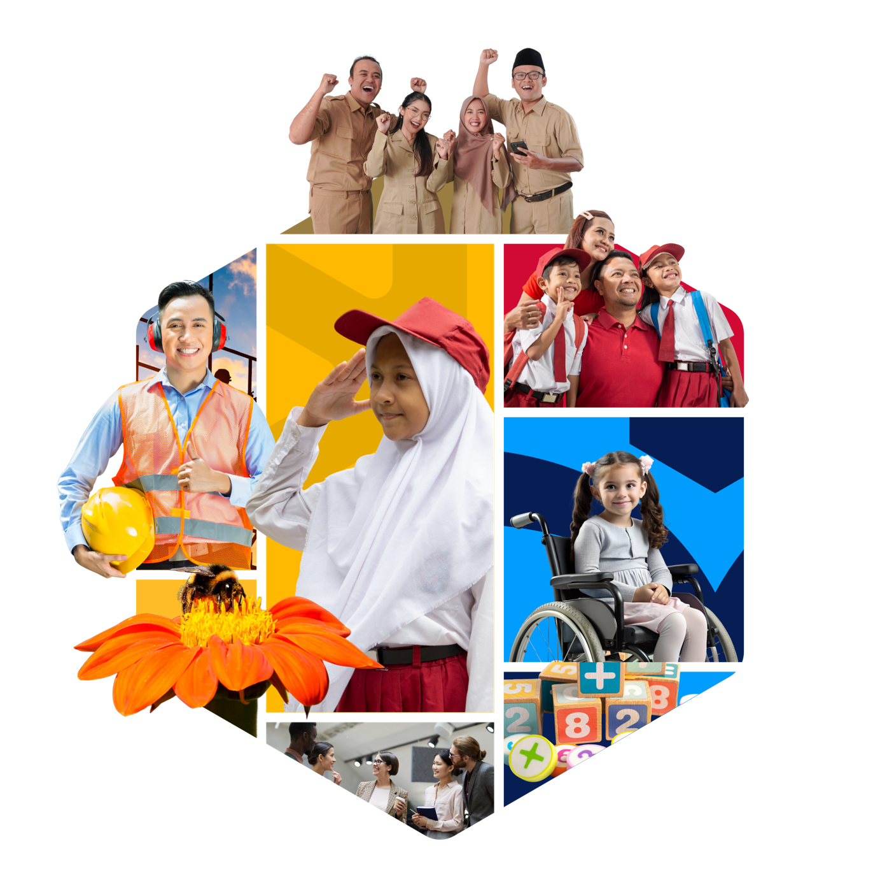
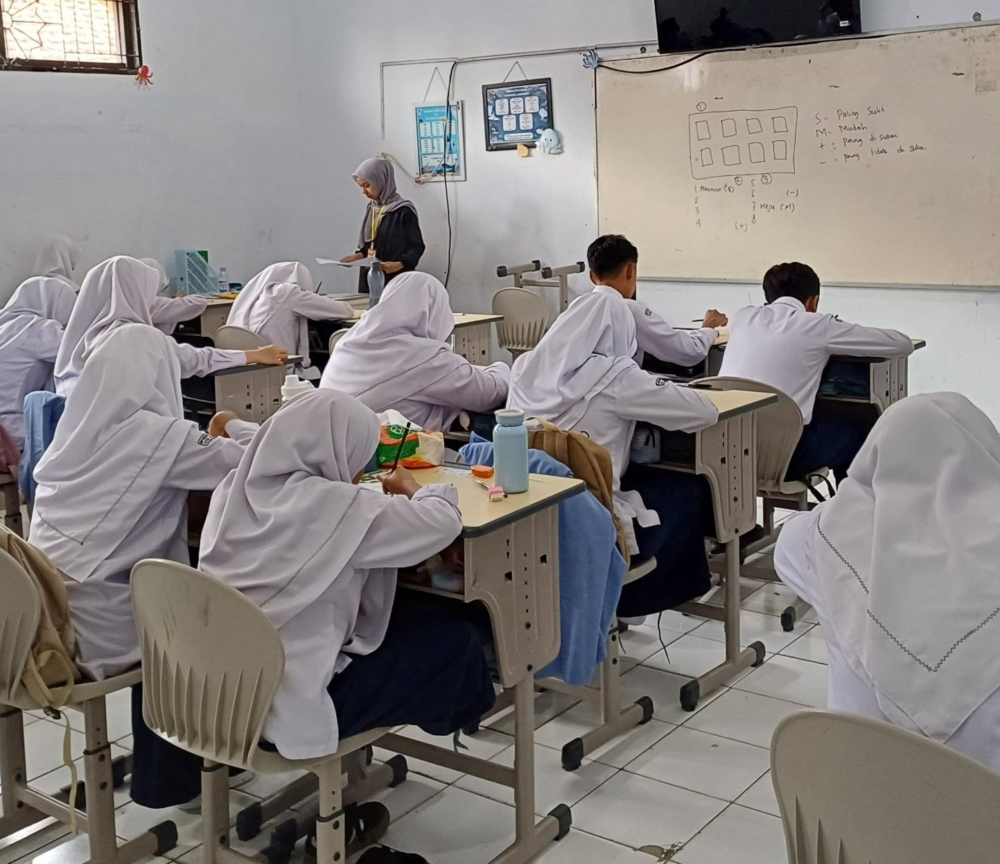
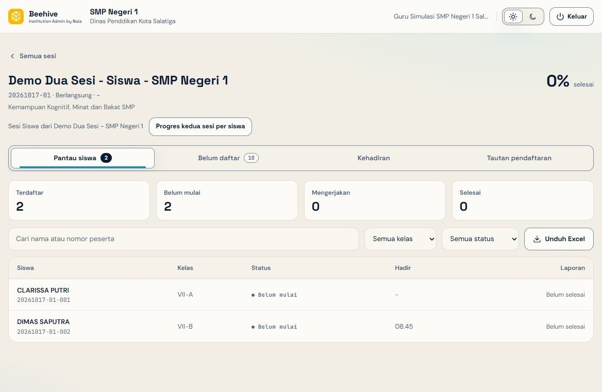
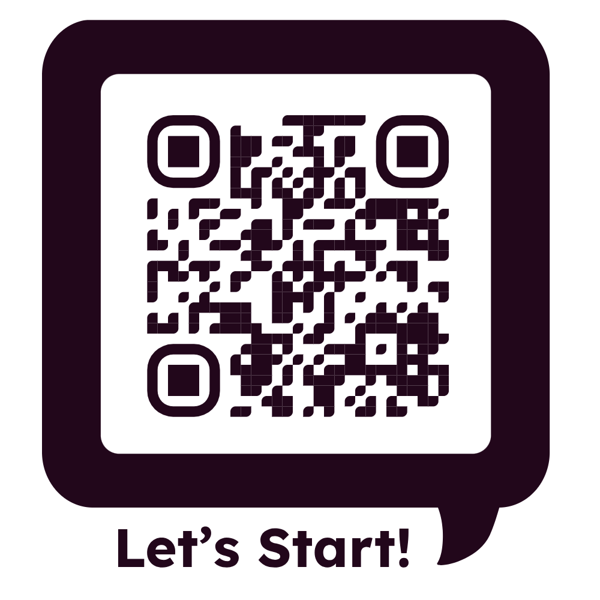

remaja Indonesia usia 10–17 tahun memiliki masalah kesehatan mental. Hanya 2,6% yang pernah mengakses layanan.
PROPOSAL KEMITRAAN · 2026
BEEHIVE × MUHAMMADIYAH
Proposal
Kemitraan
Beehive × Muhammadiyah
Pemetaan psikologis siswa yang berkelanjutan untuk sekolah Muhammadiyah
Asesmen digital empat kali setahun, terhubung ke platform Persyarikatan, dilaksanakan guru dan didampingi psikolog.
✦
Sistem asesmen digital terintegrasi

LATAR BELAKANG
Kebutuhan psikologis siswa besar, dan sekolah
adalah pintu pertamanya
siswa SD dan SMP mengalami perundungan di sekolah: 26,8% siswa kelas 5 SD dan 26,3% siswa kelas 8 SMP.
pengasuh memilih sekolah sebagai tempat layanan kesehatan mental bagi anaknya.
ARAH KEBIJAKAN
Permendikdasmen No. 6 Tahun 2026 mewajibkan deteksi dini serta penguatan dukungan psikologis dan sosial bagi warga sekolah, dengan Guru BK melaksanakan asesmen kebutuhan psikologis murid.
TENTANG BEEHIVE
Beehive: mitra psikologi untuk
ekosistem sekolah
Mengubah data psikologis siswa menjadi keputusan pendampingan yang cepat dan tepat.
asesmen selesai
lembaga mitra
termasuk SLB
tes digital

RINGKASAN TAWARAN
Kemitraan ini berdiri di atas lima kesepakatan
- Produk
- Rangkaian asesmen dari minat bakat hingga MHCU, dalam satu platform.
- Sistem
- Terhubung langsung ke platform Persyarikatan melalui API Key.
- Pelaksanaan
- Guru melaksanakan dan mengawasi setelah bimtek; psikolog Beehive mendampingi.
- Biaya
- Rp25.000 per tes, 4 kali setahun: Rp100.000 per siswa, ≈Rp8.333 per bulan via SPP.
- Bagi hasil
- 40% Persyarikatan · 25% sekolah/guru pelaksana · 35% Beehive.
PRODUK
Tujuh layanan asesmen dalam satu platform
Minat & Bakat
RIASEC, arah jurusan, dan karier.
Potensi Kognitif
Kemampuan berpikir dan area pengembangan.
Gaya Belajar
Cara siswa paling efektif menyerap informasi.
Kepribadian
Pola perilaku, sikap belajar, dan cara berelasi.
Wellbeing Siswa
Emosi, adaptasi, relasi sosial, dan perundungan.
Kesiapan Sekolah
PAUD/TK menuju SD: kognitif, bahasa, motorik.
MHCU
Mental Health Check-Up untuk siswa dan guru.
Semua di HP.
Skoring dan laporan terbentuk otomatis.
Komposisi tes disesuaikan jenjang dan tujuan sekolah; tidak semua tes diberikan di setiap jenjang.
05PRODUK
Rekomendasi laporan menyesuaikan jenjang siswa
SD / MI
KEGIATANUsia eksplorasi: hasil dipakai untuk memilih kegiatan, bukan penjurusan.
SMP / MTs
PENJURUSANRekomendasi jurusan SMA, arah program studi, dan program keahlian SMK.
SMA / MA
STUDI LANJUTProgram studi kuliah, termasuk prodi di kampus PTMA, lintas rumpun, dan kedinasan.
SMK
DUNIA KERJABidang kerja yang selaras dengan minat, bakat, dan program keahlian.
JURUSAN SMA YANG
DISARANKAN
REKOMENDASI PROGRAM STUDI
1
Kedokteran GigiKesehatan · IPA
79%
2
KedokteranKesehatan · IPA
79%
3
PsikologiSosial · IPA
78%
TERHUBUNG KE KAMPUS MUHAMMADIYAH
Rekomendasi prodi di PTMA
Setiap rekomendasi program studi bisa dilengkapi pilihan prodi yang tersedia di Perguruan Tinggi Muhammadiyah–‘Aisyiyah, seperti UMY, UMS, dan UMM.
DESAIN PEMANTAUAN
Empat asesmen setahun: kondisi siswa terus
terpantau dan terpetakan
-
1
JULI–AGUSTUS
Pemetaan Awal
Minat & bakat, potensi kognitif, gaya belajar, kepribadian. Menjadi baseline setiap siswa.
-
2
OKTOBER–NOVEMBER
Wellbeing & MHCU
Emosi, adaptasi, relasi sosial, dan perundungan setelah semester berjalan.
-
3
JANUARI–FEBRUARI
Pantau Lanjutan
Wellbeing dan sikap belajar di awal semester genap, dibandingkan dengan tahap 2.
-
4
APRIL–MEI
Evaluasi & Transisi
Evaluasi akhir tahun, plus rekomendasi jurusan bagi kelas akhir (6, 9, 12).
CATATAN
VALIDITAS
Tes kognitif dan minat tidak diulang setiap tahap agar hasil tetap valid; yang dipantau berkala adalah kondisi wellbeing siswa.
ALUR SISTEM
Terintegrasi dengan platform Persyarikatan
SUMBER DATA
Platform
Muhammadiyah
Data sekolah, kelas, dan siswa (NISN), serta akun guru.
Data siswa
via API Key
MESIN ASESMEN
Beehive Engine
Tes digital, skoring otomatis, dan laporan instan.
Hasil &
status real time
Sekolah & guru
Dasbor kelas dan laporan per siswa.
Orang tua
Laporan anak, diakses dengan NISN.
Persyarikatan
Dasbor agregat wilayah dan rekap bagi hasil.
Opsi A · Integrasi API penuh
Data siswa tersinkron otomatis; siswa cukup masuk dari platform.
Opsi B · Tautan & QR
Siap pakai tanpa menunggu integrasi: siswa ketik NISN lalu mulai.
PELAKSANAAN
Guru melaksanakan, psikolog mendampingi
TAHAP 1 · SEBELUM
Bimtek guru oleh Beehive
- Daring atau luring, dipandu psikolog
- SOP dan instruksi baku pelaksanaan tes
- Etika dan kerahasiaan data siswa
- Membaca dasbor dan laporan
TAHAP 2 · DI KELAS
Pelaksanaan oleh guru
- Guru memberi instruksi baku
- Siswa tes di HP atau lab, cukup NISN
- Guru mengawasi jalannya tes
TAHAP 3 · SELAMA & SESUDAH
Supervisi psikolog
- Memantau progres secara real time
- Validasi hasil dan laporan
- Menangani kasus khusus dan rujukan
PENJAMINAN MUTU
Seluruh proses berada di bawah psikolog penanggung jawab ber-SIPP. Guru yang telah mengikuti bimtek menerima sertifikat pelaksana.
HASIL & PEMANTAUAN
Hasil langsung
terlihat, pelaksanaan
bisa dipantau
-
Pantau langsung
Siapa belum mulai, sedang mengerjakan, dan selesai, per kelas.

KERAHASIAAN & ETIKA
Data siswa dijaga sejak awal
Akses berbasis peran
Guru melihat kelasnya, orang tua melihat anaknya, Persyarikatan melihat gambaran agregat.
Data individual sesuai persetujuan
Persyarikatan dan sekolah menerima data agregat; data individual dibuka sesuai persetujuan.
Jawaban tetap rahasia
Jawaban per soal tidak ditampilkan. Data dikumpulkan hanya untuk tujuan yang disepakati.
Hasil bukan label
Hasil menjadi dasar pendampingan. Kasus khusus dirujuk ke layanan profesional yang sesuai.
INVESTASI
Rp100.000 per siswa per tahun untuk empat kali
pemetaan
per tes
4 kali asesmen kepribadian
per siswa per tahun
≈Rp8.333
12
per bulan bila dibebankan ke SPP siswa (Rp100.000 ÷ 12 bulan): cukup tambahan 8 ribuan setiap bulan.
BAGI HASIL
Bagi hasil: 40% untuk Persyarikatan
40%
Persyarikatan
25%
Sekolah / guru pelaksana
35%
Beehive
PERSYARIKATAN · 40%
Rp10.000per tes · Rp40.000 per siswa per tahun
Dikelola Persyarikatan sesuai kebijakan Majelis.
SEKOLAH / GURU · 25%
Rp6.250per tes · Rp25.000 per siswa per tahun
Apresiasi guru pelaksana dan kas sekolah.
BEEHIVE · 35%
Rp8.750per tes · Rp35.000 per siswa per tahun
Platform, server, skoring, laporan, bimtek, dan supervisi psikolog.
SKEMA BERTINGKAT
Manfaat per tahun bagi Muhammadiyah: 10 ribu hingga
1 juta siswa
| Jumlah siswa | Persyarikatan 40% | Sekolah/guru 25% | Total untuk Muhammadiyah |
|---|---|---|---|
| 10.000 | Rp400 juta | Rp250 juta | Rp650 juta |
| 25.000 | Rp1 miliar | Rp625 juta | Rp1,625 miliar |
| 50.000 | Rp2 miliar | Rp1,25 miliar | Rp3,25 miliar |
| 100.000 | Rp4 miliar | Rp2,5 miliar | Rp6,5 miliar |
| 250.000 | Rp10 miliar | Rp6,25 miliar | Rp16,25 miliar |
| 500.000 | Rp20 miliar | Rp12,5 miliar | Rp32,5 miliar |
| 1.000.000 | Rp40 miliar | Rp25 miliar | Rp65 miliar |
*Belum termasuk pajak.
Asumsi: Rp25.000 per tes × 4 tes per siswa per tahun. Baris 1 juta siswa setara hampir seluruh jaringan: peserta didik sekolah dan madrasah Muhammadiyah–‘Aisyiyah sekitar 1,07 juta (TA 2025/2026).
14ILUSTRASI PER SEKOLAH
Bagi satu sekolah, kemitraan ini juga menjadi
pemasukan
SEKOLAH 300 SISWA
Rp7,5 jutaper tahun untuk sekolah dan guru pelaksana
Kontribusi ke Persyarikatan: Rp12 juta
SEKOLAH 600 SISWA
Rp15 jutaper tahun untuk sekolah dan guru pelaksana
Kontribusi ke Persyarikatan: Rp24 juta
SEKOLAH 1.000 SISWA
Rp25 jutaper tahun untuk sekolah dan guru pelaksana
Kontribusi ke Persyarikatan: Rp40 juta
NILAI TAMBAH
Selain pemasukan, sekolah memegang peta kebutuhan siswa per kelas untuk menyusun program pembinaan, metode belajar, dan pendampingan lanjutan.
LANGKAH BERIKUTNYA
Tahapan menuju implementasi
-
1
BULAN 1
MoU & pilot
Kesepakatan kerja sama, wilayah, dan sekolah percontohan.
-
2
BULAN 1–2
Integrasi API
Penerbitan API Key, uji coba teknis, dan keamanan data.
-
3
BULAN 2
Bimtek guru
Gelombang pertama guru pelaksana di sekolah pilot.
-
4
BULAN 3
Asesmen pilot
Asesmen pertama, laporan, dan pemaparan hasil.
-
5
SEMESTER BERIKUTNYA
Perluasan
Evaluasi pilot, lalu perluasan bertahap ke wilayah lain.
YANG KAMI
BUTUHKAN
Penunjukan PIC dari Majelis Dikdasmen PNF, akses API platform Persyarikatan, dan daftar sekolah pilot.
MULAI SEKARANG
LET'S TRY THE TEST!
Scan QR Code di bawah ini untuk memulai tes.

Mari petakan potensi
siswa
Muhammadiyah
bersama.
082 123 768 468
@beehive.psikologi
beehive.psikologi@gmail.com
ALAMAT
Jl. Sumantri IV/04 Dukuh Asri,
Sidomukti, Kota Salatiga
BEE TRUE. BEE YOU.